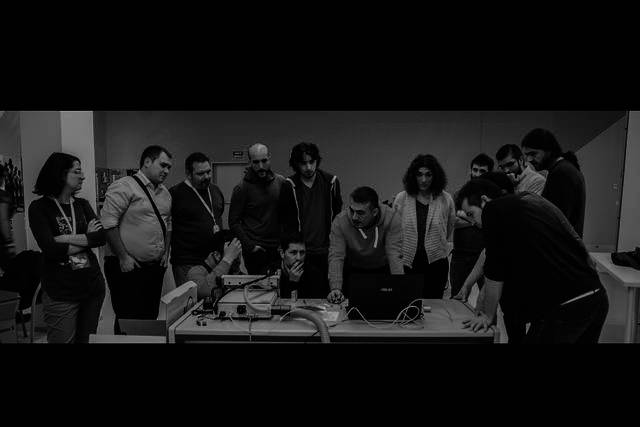

Nueve laboratorios en manos de la ciudadanía

Diez proyectos ciudadanos tomarán forma en Etopia. Se abre un proceso colaborativo para elaborar las bases de la convocatoria.
Contact
Francisco Sanz
Institute for Biocomputation and Physics of Complex Systems
Mariano Esquillor, Edificio I + D - 50018 Zaragoza (Spain)
frasanz(at-no-spam)bifi.es
(+34)976762995 This is page is supported by github.io